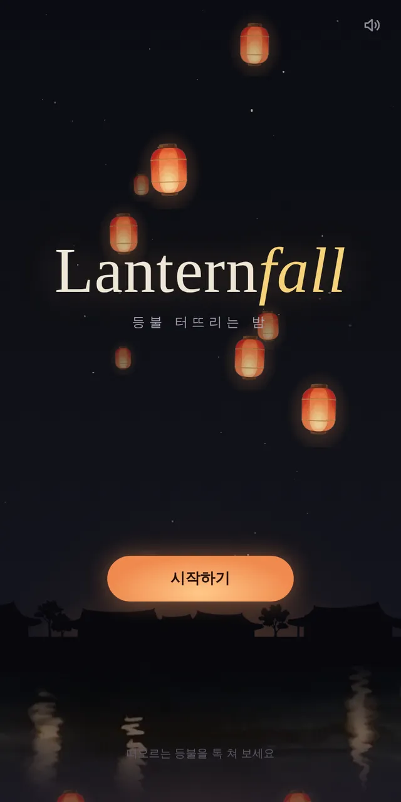
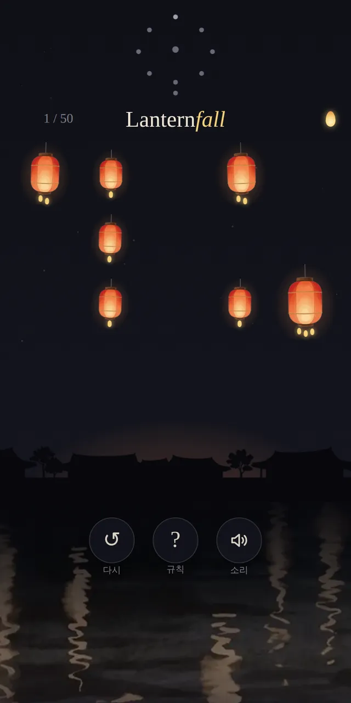
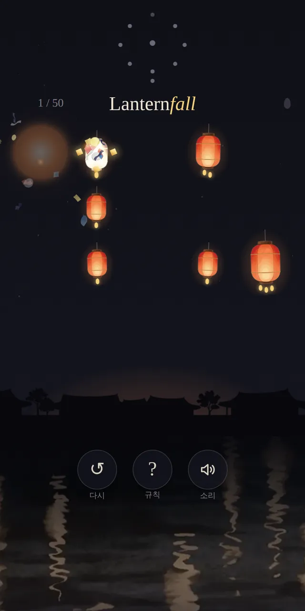
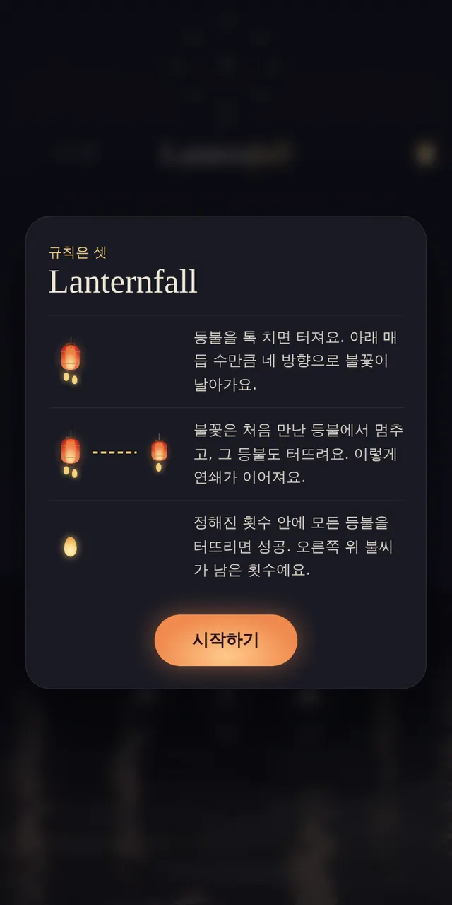

어떤 게임인가요?
강 위 밤하늘에 한지 등불이 둥실둥실 떠 있어요. 등불을 톡 치면 팡! 불꽃이 네 방향으로 날아가 옆 등불까지 터뜨려요.
딱 한 번의 톡으로 등불이 줄줄이 터지며 밤하늘이 환해지는 순간, 그 쾌감이 이 게임의 전부예요.
첫 밤에서 시작해 바람 부는 밤, 깊은 밤, 축제의 밤을 지나 새벽까지. 장마다 등불 색과 음악, 밤소리가 바뀌고, 판을 깰 때마다 밤하늘에 별이 하나씩 켜져 별자리가 완성돼요.
이렇게 해요
- STEP 1
살펴봐요
등불 아래 매듭 수만큼 불꽃이 날아가요. 오른쪽 위 불씨가 칠 수 있는 횟수예요.
- STEP 2
톡!
등불을 짧게 톡 치면 터져요. 불꽃은 처음 만난 등불에서 멈추고 그 등불도 터뜨려요.
- STEP 3
연쇄로 모두 팡!
정해진 횟수 안에 모든 등불을 터뜨리면 성공. 밤하늘에 별이 하나 켜져요.



✨ 알아 두면 좋아요
- 등불을 꾹 누르고 있으면 불꽃이 갈 길이 금색 선으로 보여요. 손을 떼도 터지지 않아요.
- 잠든 등불에 불꽃이 닿으면 깨어나 버려요. 불꽃이 비켜 가도록 길을 골라야 해요.
- 바위, 거울처럼 새로운 요소가 하나씩 나타나요. 처음 나올 때마다 설명 카드가 떠요. 아래 「?」를 누르면 규칙을 다시 볼 수 있어요.
- 연쇄가 이어질수록 「팡」 소리가 한 음씩 올라가요. 소리를 켜고 해 보세요.
이런 분께 추천해요
- 짧게 한 판씩 즐길 게임을 찾는 분
- 한 번에 와르르 터지는 쾌감을 좋아하는 분
- 예쁜 밤 풍경과 음악을 좋아하는 분
「시작하기」를 누르면 규칙 세 줄이 먼저 나와요. 틀려도 「다시」로 바로 다시 할 수 있어요. 막히면 등불을 꾹 눌러 불꽃 길을 미리 보세요.
📱 어떤 기기에서 하면 좋을까요?
- 가장 좋아요휴대폰 세로로 · 한 손
세로 화면, 한 손가락으로 하도록 만든 게임이에요.
- 좋아요태블릿 세로로
등불이 크게 보여서 누르기 편해요.
- 좋아요컴퓨터·노트북 마우스
화면 가운데에 세로로 보여요. 마우스로 클릭하면 돼요.
오른쪽 위 메뉴(⋮ 또는 ···)에서 「다른 브라우저로 열기」를 눌러 크롬이나 사파리로 열어 주세요. 앱 안에서는 전체 화면이 안 되고 저장이 풀릴 수 있어요.
🍎 아이폰·아이패드에서는
- ① 사파리로 열기
주소를 사파리에서 열어 세로로 들어 주세요.
- ② 소리를 켜 주세요
장마다 다른 음악과 풀벌레·강바람 같은 밤소리, 연쇄로 올라가는 「팡」 소리가 절반의 재미예요. 무음 스위치를 풀어 주세요. 소리는 화면을 처음 누를 때 켜져요.
- ③ 이어서 하려면
깬 단계는 그 기기에 자동으로 저장되고, 첫 화면에 「이어하기」가 생겨요. 아이폰 사파리는 오래 들어가지 않은 사이트의 기록을 지우기도 해요.
🤖 갤럭시 등 안드로이드에서는
크롬이나 삼성 인터넷으로 열면 돼요. 안드로이드에서는 등불이 터질 때 진동도 함께 와요.
▶ 바로 해 보기
설치도, 회원가입도 필요 없어요.
랜턴폴 시작하기game.edoori.co.kr/lanternfall/